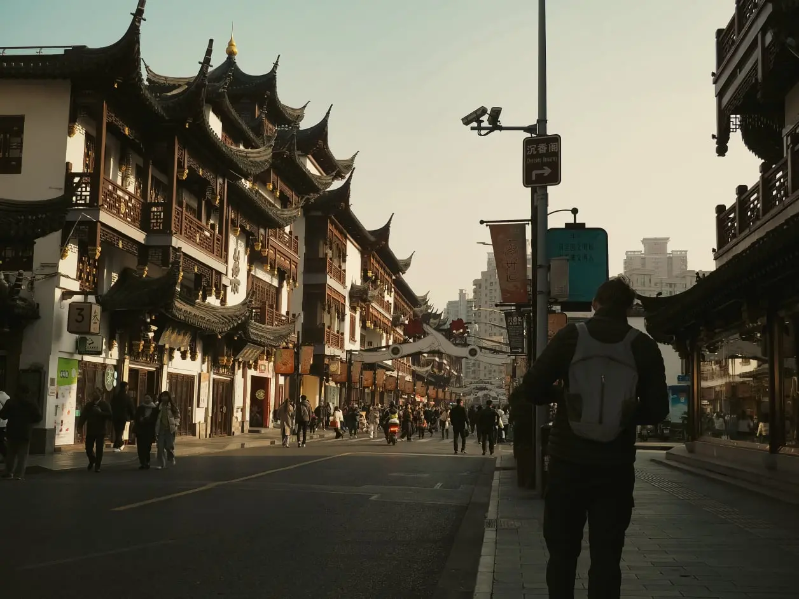

In front of the Yuyan garden

Even though we couldn't enter the gardens, the installations on the outside were stunning
Our hotel in Shanghai that we left after the first night
I was not impressed by Shanghai when we landed. And frankly, even after spending few hours there I didn't love it as much as Japan, and would probably not come back to visit. But we still had nice time and saw some cool things. However, the first day was a complete disaster. After stepping out of the metro station the city was stinky and dirty. The weather didn't help, it was cloudy and made Shanghai look very gray. First thing on the list - check in the hotel. We stayed in Hi Inn and were utterly disappointed, not only did the hotel look scary, the room wasn't clean, there was mold in the bathroom corners and bugs (living and dead) on the floor. The dust must have been at least few months old and overall it didn't feel hygienic. Our enthusiasm about China was decreasing but we were hungry, so maybe it seemed worse than it actually was. We desperately wanted out of the hotel, so we took a walk in our area, close to the Ninjang road (the location was the only pro of the hotel) and found a place to eat.
It made us feel even worse because we accidently entered a very expensive restaurant with mediocre food. We ordered very simple meal - chicken, rice, dumplings and some vegetables. Everything was drowning in oil, the chicken was mostly just bones and skin, and the dumplings were below average. Late at night in the hotel we were so disgusted that we decided to transfer. We got a refund for the room due to its condition, still had to spend one night sleeping there, and in the morning we moved about an hour away to Maixinge International Hotel in Shanghai. It was the best decision! The hotel was beautiful and even though its location was a bit far out the city center, we had a street food market around the corner and it was delicious! Completely switched our mood and transformed our trip into what turned out to be a lovely stay.
Nanjing road bustling with people
While traveling, we're trying to save money wherever possible and hence we don't spend much on shopping. Regardless, the Nanjing Road was our first stop. Nanjing Road is more than five kilometers long street in one of the busiest shopping districts in the world. It hosts essentially most of the biggest brands in the world, some unique stores and stunning buildings, best to enjoy in the evening when it gets dark and all the shops light up. The Nanjing Road is constantly bustling with people and even offers number of places to eat.
View from the riverside
Close to the Nanjing Road stands the pride of Shanghai, the collection of buildings along the Huangpu river. I recommend walking the promenade later in the day when it gets dark, it might be busy with people but the views are worth it. One of the taller buildings we noticed was The World Financial center, which has a hole in it and, truthful to its nickname, looks like a bottle opener. We spend less than an hour at the promenade but I was impressed. Completely breathtaking!
Yuyan garden
Another location in Shanghai worth visiting, which is again close to the Nanjing Road and the Pudong Riverside Promenade, is the Yuyuan garden. We booked our tickets on Trip.com but did a small mistake and booked a Yuyuan garden in Nanjing (we thought it's Nanjing Road but no, it's a completely different city). So when we arrived the Garden was closed because, as we found out too late, it is closed on every Monday. Lesson learned! It was still possible to walk around the little shops and adore the architecture, we just couldn't enter. But I think it was still worth visiting.
In front of the Yuyan garden
Even though we couldn't enter the gardens, the installations on the outside were stunning
Our sleeper train to Beijing was late in the evening, so we dropped our bags off at the lockers in one of the metro station and took a three hour walk around. We were close to Shanghai's art district and almost accidentally stumbled across the 1000 Trees building, which is a complex full of shops and restaurants (inside it was very empty, but justly so, it was not super interesting). It is interesting from the outside, situated next to the Suzhou River is appears as a mountain covered in trees. To finish off, we took a peaceful walk along the river and hoped on our train to Beijing.
We came back three times to get cheeseburgers from this place!
Up until now it was cheaper, more convenient and tastier to be eating at restaurants but after coming to Shanghai, we changed up our strategy. We tried two restaurants and didn't enjoy the food in either, and the standard fare seems to be higher (compared to supermarkets or street food), so we moved towards a more simple dishes. I highly recommend trying the street food, we could see how the cooks prepared ingredients and assembled our meals, and the price varied but was in general under 20 yuan. We could find anything from skewers, pancakes filled with pork mixture, hamburgers or noodles.

Free AI Website Creator